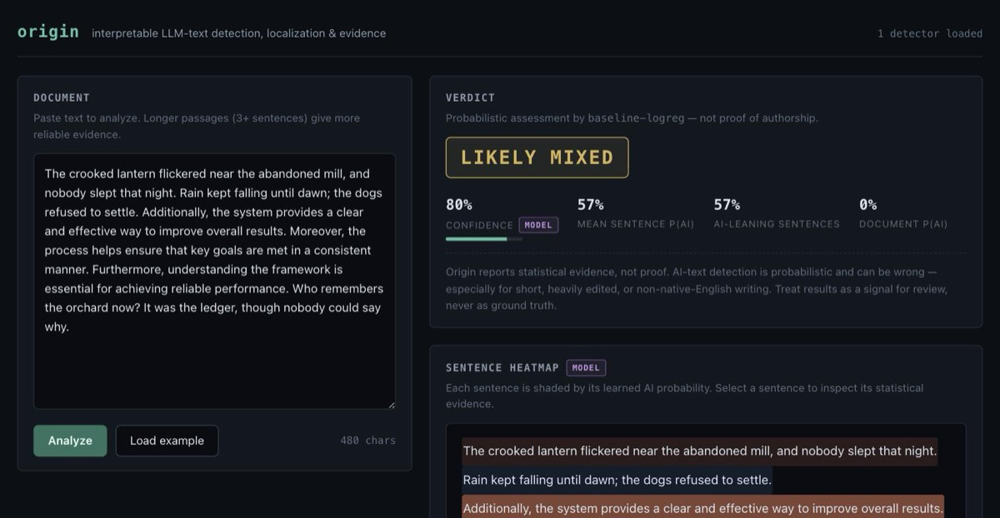

Output 04
Origin
Interpretable detection, localization, and explanation of LLM-generated text.

Abstract
Origin is a tool for asking whether a piece of text was written by a person, generated by a language model, or some of each. Instead of a single opaque score it classifies documents as Human, AI or Mixed, localizes the verdict to individual sentences, and shows the statistical evidence behind it: perplexity, surprisal, burstiness, lexical and stylistic features.
It's both a research platform and a working application. The platform side is a feature engine, two detector families, and an evaluation framework with ablations and held-out-family slices. The application side is a FastAPI backend, a React UI and a CLI, all running the same analysis engine.
Research questions
- Is a document human-written, AI-generated, or mixed?
- Which sentences are most likely AI-generated?
- What statistical signals support the prediction?
- How well does detection generalize to model families it never saw in training?
- How robust is it to paraphrasing, sampling temperature, and mixing?
- Do neural detectors learn signals similar to classical perplexity and surprisal features?
The experiment protocol, metric definitions and ablation matrix are written down in RESEARCH.md, and one command runs the whole thing.
How detection works
A causal language model assigns each token a probability given its left context. Surprisal (negative log2 of that probability, in bits) says how unexpected a token is; perplexity summarizes a passage. Text sampled from an LLM tends to be unusually predictable under an LLM, with low perplexity and few high-surprisal tokens, because the generator picked likely tokens in the first place.
Human writing also varies more. Long winding sentences sit next to two-word fragments, predictable stretches next to surprising ones. Origin measures the Goh-Barabási burstiness index and the coefficient of variation over sentence perplexities and sentence lengths; sampled text is usually more uniform.
There are two detector families. The classical path is a calibrated logistic regression over about 40 interpretable features, with Platt scaling on out-of-fold scores, exported as pickle-free JSON artifacts that embed feature importances and per-class training distributions. Every coefficient can be inspected. The neural path fine-tunes a transformer to classify sentences directly, with a documented rule for aggregating sentence probabilities into a Human, AI or Mixed verdict. The ablation framework measures what each signal family contributes, and a correlation analysis measures how much the two families agree.
Everything Origin shows is tagged. Feature values, surprisal series and distribution comparisons are direct measurements; sentence probabilities and verdicts are learned classifier outputs. The UI, API and CLI keep that distinction end to end.
Results
Two importers build real corpora locally: HC3 (human versus ChatGPT answers) and MAGE (7 model families across 10 domains, plus GPT-4 out-of-distribution testbeds). Measured with the interpretable logistic regression and a distilgpt2 scorer, at two corpus scales:
| Evaluation (AUROC) | 1.5k docs | 5.1k docs |
|---|---|---|
| Held-out test, 8 seen families | 0.90 | 0.91 |
| Weakest seen family (flan-t5) | 0.67 | 0.76 |
| Sentence localization (mixed documents) | 0.73 | 0.76 |
| GPT-4, family and domain never seen in training | 0.81 | 0.79 |
| GPT-4 plus paraphrase attack | 0.48 | 0.47 |
Scaling the corpus 3.3x improved in-distribution detection, the weakest families and localization, while transfer to the unseen model sat around 0.80 either way. The differences there are inside the noise, which points at the linear model, not the data volume, as the binding constraint for out-of-distribution generalization.
Two things I took from this. Detection transfers to a newer model it never trained on because it rests on an ensemble of distributional signals rather than raw perplexity; in a pilot, perplexity by itself only reached about 0.61 AUROC on GPT-4 text. And a determined paraphrase attack still defeats the detector entirely, down to chance. That matches the published literature and I'd rather say so than hide it.
Limitations
AI-text detection is statistical inference, never proof. Short texts carry little signal. Human editing, paraphrasing tools and unusual sampling settings move text across the decision boundary in both directions. False positives happen. Detectors generalize imperfectly to model families absent from training. Every result Origin produces carries an explicit disclaimer, and the intended use is a signal for review, not a verdict about authorship.
Reproducibility
Environments are pinned with uv.lock, package-lock.json and .python-version. Every stochastic step is seeded: splits are pure functions of the seed and a group id, so a document and its paraphrase can never straddle a split, and training seeds Python, NumPy and Torch. Experiment outputs embed their config, seed and git commit. The unit tests run fully offline and deterministically; heavyweight models are replaced by committed fixtures of about 200 KiB, and real-checkpoint tests are opt-in.
The bundled sample corpus is a synthetic fixture of 102 documents whose class signatures are separable by construction. Near-perfect scores on it validate the pipeline, not real-world detection ability. Real research use means importing a real corpus and an HF scorer and re-running the same protocol.
Running it
uv sync && (cd apps/web && npm ci) uv run uvicorn origin_api.main:app --port 8000 # API; demo detectors train at startup, ~5s cd apps/web && npm run dev # UI at http://localhost:5173 uv run origin analyze --text "Your document here..." uv run origin analyze essay.txt --json uv run origin experiment experiments/sample.json # 5 ablations x all slices, figures included
All of it runs offline on the sample corpus with a deterministic stub scorer. Pass --scorer hf:distilgpt2, or any causal checkpoint, for real perplexity signals.